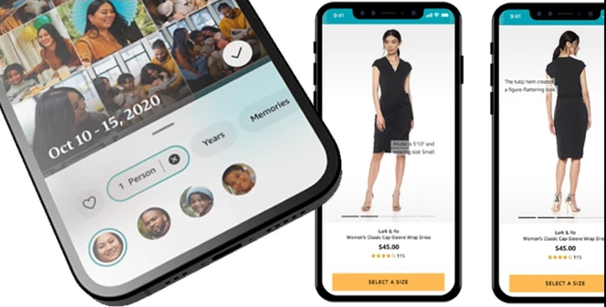

Amazon
Seven years, two businesses. Head of Design and Research for Amazon Fashion, 2015 to 2019, growing the org from 5 designers and 2 researchers to 20. Then Head of Design and Research for Amazon Photos, 2019 to 2022, across mobile, web, desktop, Echo Show, and Fire TV.
2015 to 2022
Amazon Photos, 2019 to 2022
Photos began as a cloud storage service that happened to hold photos, and years of feature additions by different teams had accumulated into an experience that didn't compete with the native photo apps on anyone's phone. At six million monthly active customers it was underperforming for a Prime-bundled service. Leadership was committed to fixing it. I used three tenets to name where it was failing.
Each tenet came with evidence. Screenshots taken the day before, without cherry-picking, showed headers, type, color, and illustration styles that changed from screen to screen. Screens were functional and viable and plainly not lovable. And a print-ordering link a product owner had placed in the home header had drawn almost no traffic in a year; printing wasn't in customers' top ten needs. No customer need, no reason to keep it.
Project Cooper
That case got the green light for a full teardown and rebuild. Research settled what customers actually wanted, in order: show me my photos, help me find them fast, let me share them easily, surprise me with memories, show me my account. That's the whole list. The home screen was rebuilt to meet the first two immediately, and the rest of the model followed: my memories, quick-find tools, what I've shared and with whom, my account.
We set shared design and product tenets with Dev and PM partners at the start, so three orgs argued from one set of decision criteria instead of relitigating tradeoffs at every review. The design direction shaped the rebrand that shipped alongside the rebuild. Most of the feature set carried over unchanged, so the gains came from making it usable and findable.
Shipped
61% to 78%CSAT within six months of launch 8 to 15designers, adding research, motion, and design technology
Illustration
We wanted a voice that contrasted with photo content and avoided the generic vector style on every other app. A designer found Lynn Scurfield's work in the New York Times, warmer and more organic, and we commissioned her.
Amazon Fashion, 2015 to 2019
In 2015 less than a tenth of the roughly $300 billion spent on clothing and shoes in the US was spent online, and Amazon was investing heavily to change that. Search and discovery were strong; evaluating a garment on a detail page was the weak point. Prime Wardrobe, then called Prime Try Before You Buy, took aim at it.
Prime Wardrobe
Shop for clothing and shoes, fill a box, have it shipped free, try everything for seven days, send back what you don't want in the same self-sealing prepaid box, pay only for what you keep. It was complex even for Amazon, touching every part of the retail supply chain, digital and physical. I worked directly with the product owner and executive leadership to pitch and resource the design, and saw it through to launch. Prime Stylist followed, a curated-box model for customers who wanted guidance.
Luxury Stores
The last project I led there was the luxury brands exploration: a walled garden inside the Amazon app where only the most exclusive fashion brands could be bought, with minimal store presence and the content carrying the experience. No legacy to design around. It launched more than two years after we designed it, and looked remarkably like the original work.
The detail page, as a lesson
For four years, improving the product detail page for fashion customers was constant work, and every change had to win for all Amazon customers and pass web labs before it shipped. It was glacially incremental and it taught me how to move a shared platform: negotiate, test, and pick the changes that help everyone. I later aligned my team, marketing design, and the Shopbop design team on shared tenets so the fashion experience read as one thing across Amazon. Four designers and one researcher were promoted from L5 to L6 during my tenure.